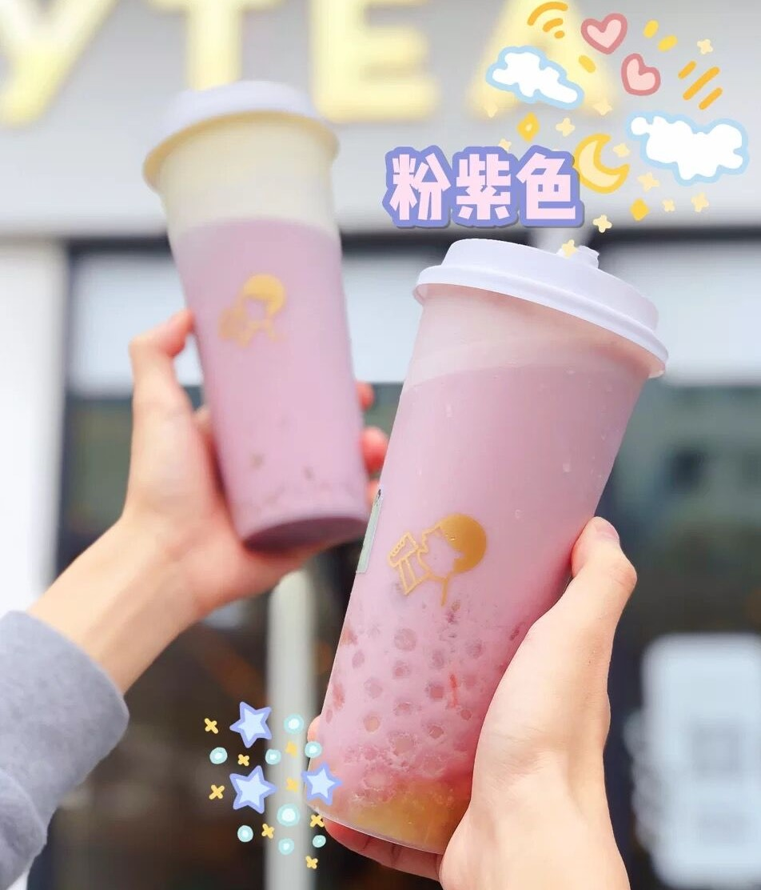

NO.1 粉紫葡萄
- 
点单攻略：多肉葡萄（云峰、少冰、少少糖）+冰淇淋
香甜柔滑，搅拌后的粉紫色超梦幻!
多肉葡萄是喜茶官方认定的人气TOP 1选手。
精选爽脆夏黒葡萄入茶，保留果肉完整的肉感。搭配清雅绿妍茶底与醇香芝士，鲜爽可口。
容量：冷饮 670ml&热饮500ml
热量：350大卡左右
价格：30RMB
喝了好多次喜茶还是觉得这一款最经典最好喝嘻嘻
点单攻略：多肉葡萄（云峰、少冰、少少糖）+冰淇淋
香甜柔滑，搅拌后的粉紫色超梦幻!
点单攻略：多肉葡萄（云峰、少少冰、少糖）+紫米粒
香香糯糯的糯米简直不要太好吃啦！
点单攻略：多肉葡萄（去芝士、桂花乌龙、正常冰少糖）+红柚粒+脆波波
葡萄柚的饱满果肉+小小粒爆汁红柚粒+脆波波=三重神仙口感(๑•̀ㅂ•́)و✧
点单攻略：多肉葡萄（桂花乌龙、正常冰、正常糖）+芋圆波波
平时绵绵软的芋泥波波放在冷饮里口感更Q弹哟(～￣▽￣)～